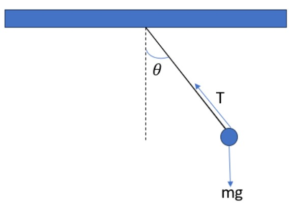
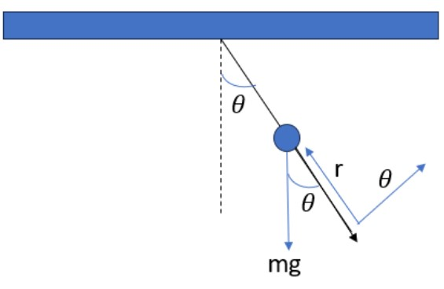
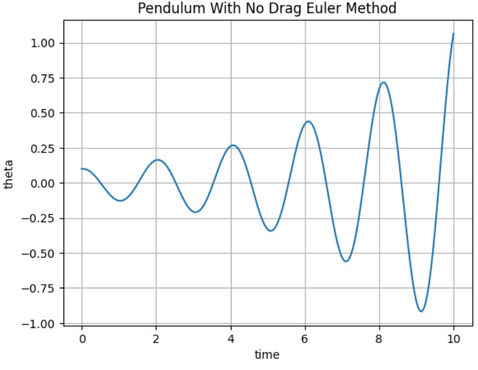
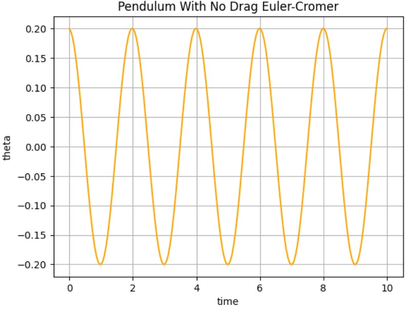
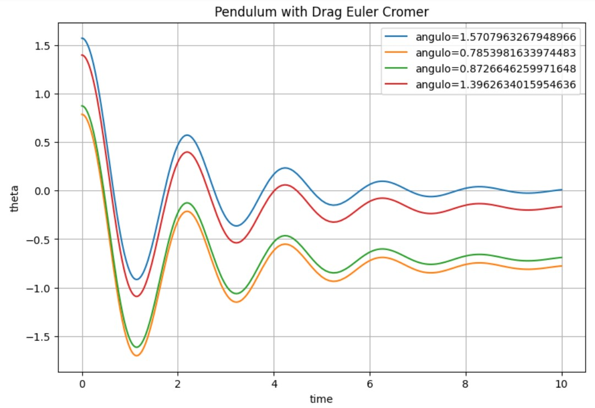
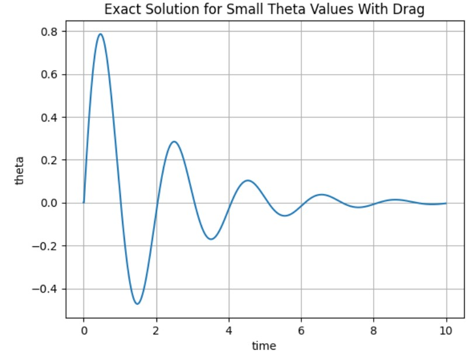

Pendulum With Drag
In a simple pendulum we have a periodic movement, that is, a movement that goes and returns. If we drew the force diagram of the movement, we would have something like this:

When we talk about a simple pendulum, we mean that the angle \(\theta\) is never greater than \(sin(15°)\), so this implies that \(sin(\theta) ≈ \theta\) so we do not have a chaotic movement, as we will see a case later. If we wrote Newton’s equations for this movement we would have:
As we see here, we have two equations to solve a system with three unknowns. This system becomes very ineffective and complex to solve, so the easiest solution is to translate the system to polar coordinates. To take a good look at how the movement would be described in polar coordinates, let’s look at the following image:

If we were to write Newton’s equations for this “new system”, we would have:
If we look at the image we can see that \(r\) is the length of the string, so its derivative is a constant so it is \(0\). In addition, the equation of the sum of forces in \(\theta\) can be described in a different way since the speed in this movement would be given by: \(r \frac {d\theta}{dt}\) then the equations are described as follows:
And these would be the equations that we must solve numerically.
In this paper, the pendulum equation will be solved in four cases:
Simple pendulum with Euler’s method (this is for \(\theta \leq 15°\))
Simple pendulum with the Euler-Cromer method (that is, for \(\theta \leq 15°\))
Friction Pendulum (for large \(\theta\) values)
Simple Pendulum with Euler
For this case:
Numerically:
This is:
#Import Libraries
import numpy as np
import matplotlib.pyplot as plt
g = 9.8; theta = [0.1]; w = [0]; l = 1
time = np.linspace(0, 10, 200)
for i in range(len(time)-1):
w.append(w[i] - g/l * theta[i] * time[1])
theta.append(theta[i] + w[i] * time[1])
plt.plot(time, theta)
plt.grid("--")
plt.title("Pendulum With No Drag Euler Method")
plt.xlabel("time")
plt.ylabel("theta")

Simple Pendulum with Euler-Cromer
We have the same case above but numerically it is as follows:
The code is:
g = 9.8; thetacromer = [0.2]; wcromer = [0]; l = 1
for i in range(len(time)-1):
wcromer.append(wcromer[i] - g/l * thetacromer[i] * time[1])
thetacromer.append(thetacromer[i] + time[1]*(wcromer[i+1]))
plt.plot(time, thetacromer, color="orange")
plt.grid("--")
plt.title("Pendulum With No Drag Euler-Cromer")
plt.xlabel("time")
plt.ylabel("theta")

Pendulum with friction
For this case we would have:
Where \(\frac {b}{m}\) is the coefficient \(\gamma\) used in the previous codes. Since this equation is non-linear, what we will do is “take advantage” of the definition of angular frequency \(\omega\) which is defined as the change of the angle with respect to time. So having it this way we can say that \(\omega = \frac {d\theta}{dt}\). So our equation would be in terms of \(\omega\) and would look like this:
Now yes, we can use Euler-Cromer again to solve it, and the numerical equations are as follows:
Since the idea is to observe several angles in a graph, we will create a function for this. It will receive as parameters a maximum time, a list of angles and the coefficient of viscosity, the latter is which is in the hands of the user to change. The dynamic viscosity of the air is quite low (\(0.018\)), so it is recommended to set a slightly larger number to see how the movement stops.
The code is as follows:
def frictionPendulum(tiempo, angulos, dynamic_viscosity, dt=0.01, g=9.8, l=0.5):
miu = dynamic_viscosity; m = 10; g = 9.8; R=5; #Constantes
b = 6*np.pi*R*miu
gamma = b/m
t = np.arange(0, tiempo+dt, dt)
w2=[0]
for theta_ in angulos:
theta = [theta_, theta_]
for i in range(1, int(tiempo/dt)):
w2.append(w2[i-1] + t[1] * (-g/l * np.sin(theta[i-1]) - gamma * w2[i-1]))
theta.append(theta[i-1] + t[1]*w2[i])
plt.plot(t, theta, label=f"angulo={theta_}")
plt.legend(loc="best"); plt.grid("--"); plt.ylabel("theta"); plt.xlabel("time"); plt.title("Pendulum with Drag Euler Cromer"); plt.show()
pass
Calling our finction and giving it some angles converted into radians:
fig = plt.figure(figsize=(9,6))
frictionPendulum(10, [90*np.pi/180, 45*np.pi/180, 50*np.pi/180, 80*np.pi/180], 0.097)

Now, with the purpose of comparing the exact and analytical solutions, we solved the differential equation for small angles analitically which gave as a result:
It is important to let clear that this is a possible solution when:
For large angles, the equation cannot be solved analytically since it is no longer linear (\(sin(\theta)\) appears) in the second derivative of \(\theta\). So, the solution of this analytic remains:
gamma = 1; phi = 0; theta = [0]; amp=1; phi=0; g =9.8; l=1
time = np.arange(0, 10, 0.01)
w = np.sqrt( abs((gamma**2 / 4) - (g/l)))
for i in range(len(time)-1):
theta.append(amp * np.exp(-gamma*time[i]/2) * np.sin(w*time[i] + phi))
plt.plot(time, theta)
plt.title("Exact Solution for Small Theta Values With Drag")
plt.grid("--"); plt.ylabel("theta"); plt.xlabel("time")
